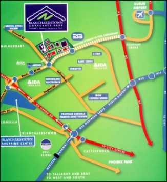

"Only when the last tree is cut down, the last fish eaten and the last stream poisoned, you will realize that you cannot eat money."

Contact Us
If you have any queries or comments, you can call us on +353 23746474 or email our Head Office: Zero Waste Dublin Office.
Getting Here
Our Head Office is located at Blanchardstown Road North, Dublin 15,D15 YV78
Traveling by Bus
- 17A from Kilbarrack
- 38 from O'Connell Street
- 38A from O'Connell Street
- 238 serves Lucan
- 239 serves Finglas and Glasnevin
Click here to find out more about the Bus routes that Blanchardstown close to our offices
Traveling by Car
- Follow the signs for Dublin / M1
- Continue south onto the M1 Motorway
- At M1 junction 1, take the M50 exit to N7/N2/N11/N3/N4/N81
- At the roundabout, take the 3rd exit onto M50
- At junction 6, take the N3 exit to Blanchardstown
- Keep in the left hand lane and you will enter the N3
- Take either of the next two exits off the N3 at the Blanchardstown Centre
Traveling by Train
Click here to find out more about the Train routes that service Blanchardstown close to our offices
Lost?
If you have any difficulties finding us, Please contact: Zero Waste Dublin Office.